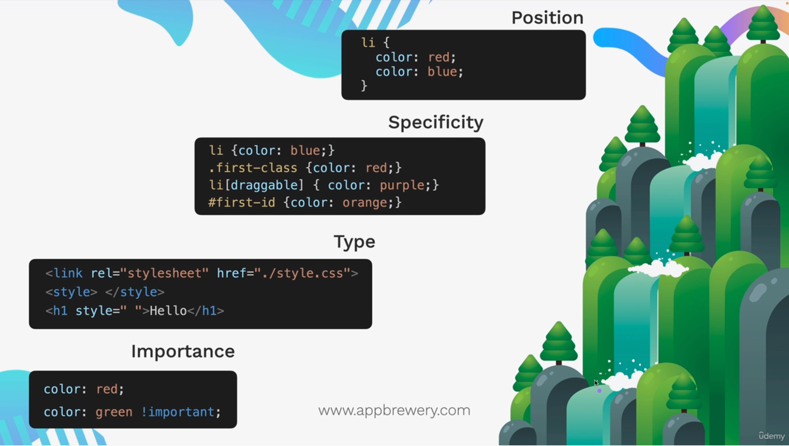

Cascading style sheets are called cascading because several different style sheets can be active for a single document at the same time.
The name cascading comes from the specified priority scheme to determine which style rule applies if more than one rule matches a particular element. This cascading priority scheme is predictable.
lower to higher priority types: lower down in image, higher the priority
note: there are 2 flows of priorities, once is among categories and another is among sub categories
